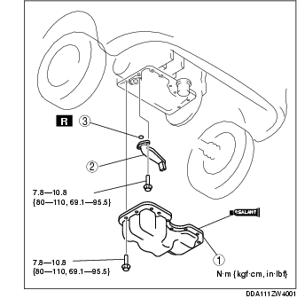
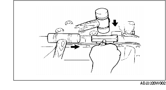
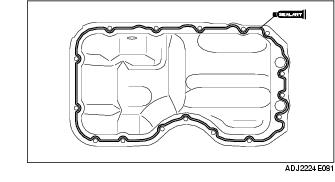
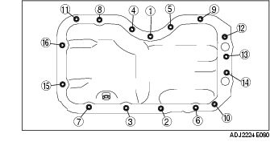

Oil pan removal/installation [ZY]
- • Hot engines and engine oil can cause severe burns. Turn off the engine and wait until it and the engine oil have cooled.
1. Disconnect the negative battery cable.
2. Remove the splash shield. (See DRIVE BELT REPLACEMENT [ZY].)
3. Drain the engine oil. (See ENGINE OIL REPLACEMENT [ZY].)
4. Remove in the order indicated in the table.

|
1
|
Oil pan
(See Oil Pan Removal Note.)
(See Oil Pan Installation Note.)
|
|
2
|
Oil strainer
|
|
3
|
O-ring
|
5. Install in the reverse order of removal.
6. Pour in the engine oil. (See ENGINE OIL REPLACEMENT [ZY].)
7. Start the engine and inspect for oil leakage.
8. Inspect the oil level. (See ENGINE OIL LEVEL INSPECTION [ZY].)
Oil Pan Removal Note
- • Pry tools can easily scratch the oil pan mounting surfaces. Prying off the oil pan can also easily bend the oil pan flange. Refer to the following instructions before removing the oil pan.
1. Remove the oil pan using the separator tool.

Oil Pan Installation Note
1. Apply silicone sealant as shown in the figure.

Thickness
2. Tighten the bolts in the order shown.

Tightening torque